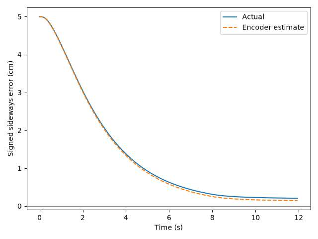
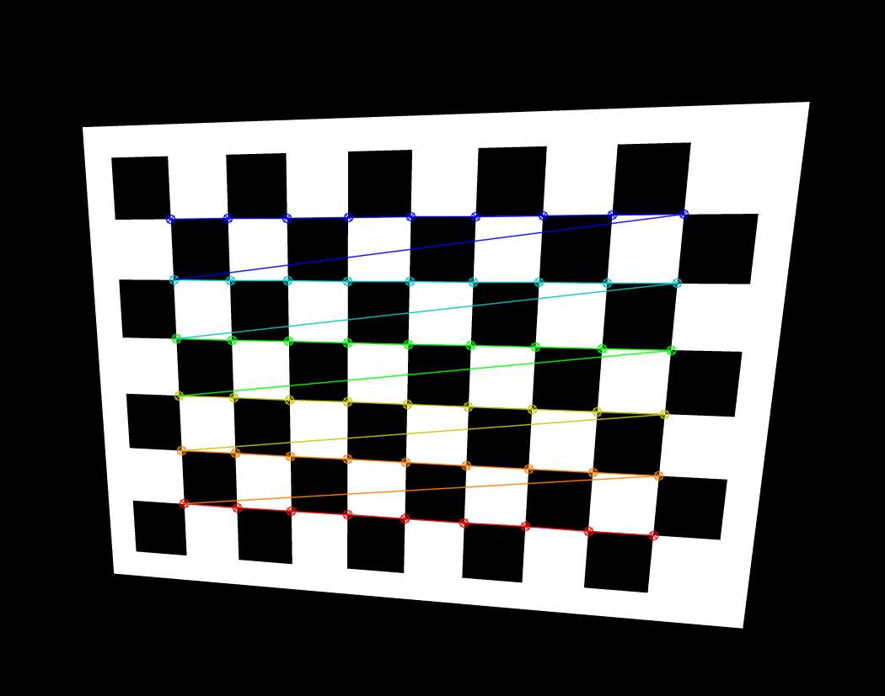
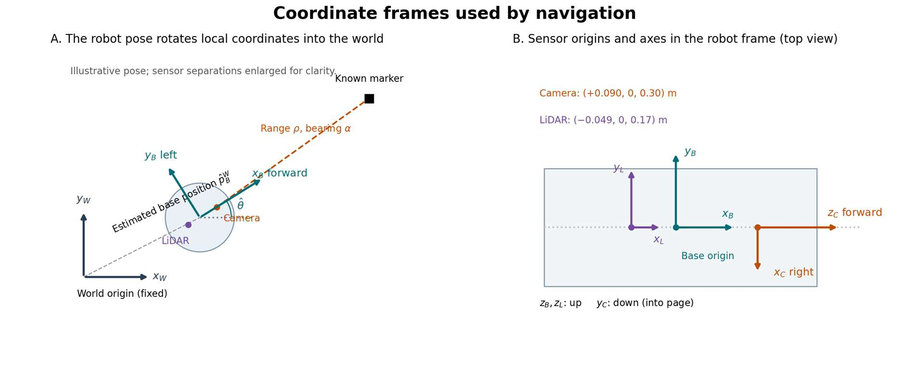
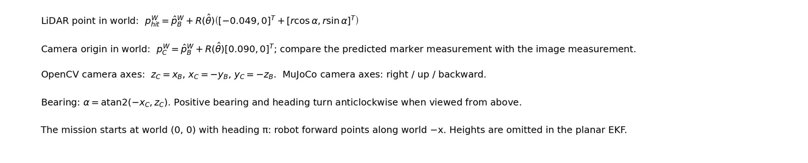
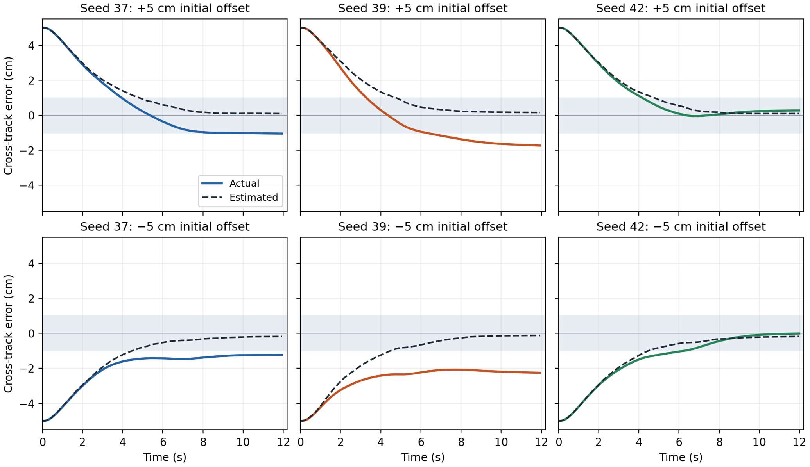
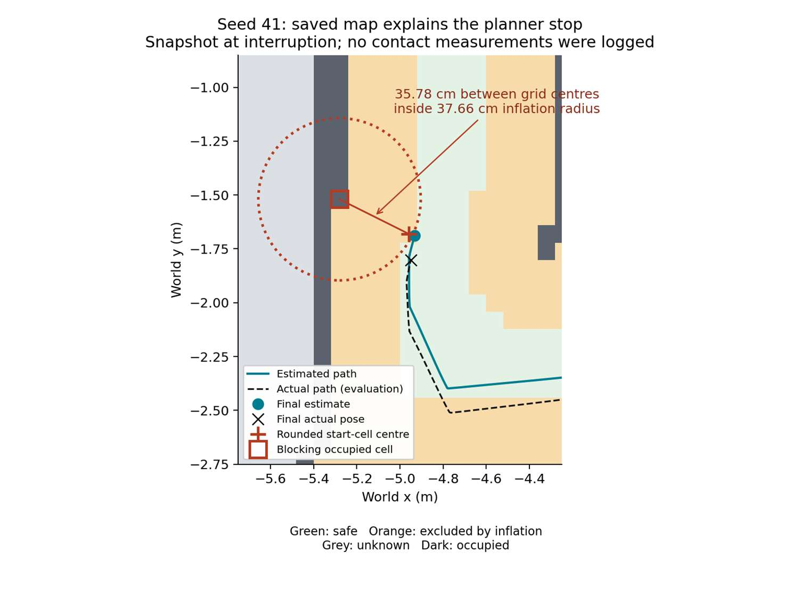
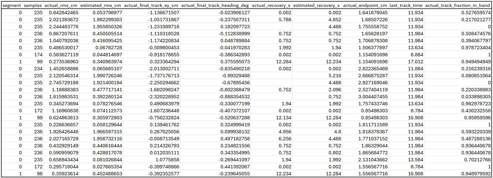

System aim & overview
A warehouse sorting mission with visual stand-off docking.
This project simulates a warehouse sorting robot in MuJoCo. The TurtleBot3 starts in a receiving area, visits three storage bays representing delivery stops, and then drives to a charging station. It uses LiDAR to plan routes around walls and shelves, while wheel odometry predicts its position and heading. When the camera detects the charger’s ArUco marker within 3 m and the measurement is accepted, the EKF uses it to correct accumulated pose error. The LQR follows the planned path using the estimated state, and camera measurements support the final docking approach.
Performance is assessed under three conditions: normal operation, added encoder noise, and encoder noise combined with a low-grip floor section.
Project targets
- Visit all three storage bays before approaching the charger, reporting the actual position error at each bay.
- Complete the route with zero wall or shelf contacts.
- Achieve lower position RMSE with camera fusion than wheel odometry alone on the same noisy drive.
- Confirm docking using the camera and finish within 3 cm of the intended stand-off position and 3° of the target’s heading.
How the system works
The TurtleBot3 begins with a known origin and heading, along with predefined storage goals and the charging-station location. During navigation, it relies on its estimated pose rather than simulator ground truth.
Wheel encoders measure wheel rotation, which the EKF uses to predict the robot’s position and heading. When an accepted camera measurement of the charger’s ArUco marker is available within 3 m, the EKF combines it with the wheel-based prediction to correct accumulated error.
LiDAR detects walls, shelves and free space. The path planner uses these measurements, and the estimated robot pose to build an obstacle map and find a route towards each goal. The LQR uses the estimated position and heading to calculate steering corrections that keep the robot following this path.
Demonstration
The final demo uses the same estimator and controller settings across the three conditions. Watch directly on YouTube ↗
Platform modelling
The wheel-motion model, its assumptions, and separate controllability and observability checks.
The TurtleBot3 Waffle Pi is modelled as a differential-drive platform. Six short MuJoCo tests with ideal encoders validate the wheel-odometry prediction below.
State, geometry and inputs
The odometry test starts at (0,0,0) in a coordinate frame fixed to the robot’s starting position. The positive x-axis points in the direction the robot initially faces, and the positive y-axis points to its left. At each simulation step, the model uses how much each wheel has rotated since the previous step to estimate the robot’s position and heading. The coordinates x and y give the estimated position of the point halfway between the wheels, in meters. The heading θ is measured in radians and increases when the robot turns anticlockwise.
The state is [x, y, θ]ᵀ. The inputs ΔφL and ΔφR are the measured changes in wheel rotation between consecutive simulation steps. The physics step is 0.002 s; the navigation controller updates every 0.05 s.
| Parameter | Value | Basis |
|---|---|---|
| Wheel radius, r | 0.033 m | Tyre STL geometry reported in the model validation |
| Wheel separation, b | 0.288 m | Wheel centres at +0.144 m and −0.144 m |
Wheel rotation → displacement → pose
A wheel rolling through one radian travels one radius. Using the wheel radius r = 0.033 m extracted from the STL files of the TurtleBot3 Waffle Pi left wheel, the distances travelled by the wheels are
Δs = (ΔsR + ΔsL)/2 Δθ = (ΔsR − ΔsL)/b
TurtleBot’s centre point travels the average of the two distances Δs. During a turn the outer wheel follows a longer arc. The difference in arc length equals the wheel separation b multiplied by the change in heading. The wheel centres are at +0.144 m and −0.144 m across the axle, giving b = 0.288 m.
The model treats the motion within one step as a circular arc. Let h be half the heading change. The factor c converts signed arc length to straight line displacement between the two ends of the arc, directed along the midpoint heading.
xk+1 = xk + Δs c cos(θk + h)
yk+1 = yk + Δs c sin(θk + h)
θk+1 = wrap(θk + Δθ)
Wrapping keeps heading between −π (inclusive) and +π (exclusive). For example, if both wheels rotate forward by 1 rad, each travels 0.033 m. The robot advances 3.3 cm along its current heading with zero heading change.
Assumptions
- Level floor and planar motion.
- Equal, constant effective wheel radii and a rigid axle.
- Rolling without slip or sideways sliding in the nominal model.
- Constant curvature within each simulation step.
Validation against simulated motion
Each test started after a settling period. The model accumulated the measured wheel rotations throughout the drive and two seconds of stopping motion. MuJoCo supplied the actual final pose for evaluation in the same starting frame. The test used ideal encoder readings and no camera corrections.
| Movement | Predicted (x, y), m | Actual (x, y), m | Heading predicted / actual, ° | Position error, mm | Heading error, ° |
|---|---|---|---|---|---|
| Straight | 0.4890, −0.0004 | 0.4879, −0.0004 | −0.097 / −0.096 | 1.1 | 0.000 |
| Left turn | −0.0003, −0.0006 | −0.0012, −0.0018 | 112.782 / 112.533 | 1.5 | +0.249 |
| Reverse | −0.1433, −0.0000 | −0.1430, −0.0000 | 0.018 / 0.018 | 0.3 | 0.000 |
| Right turn | −0.0003, 0.0006 | 0.0005, −0.0006 | −112.776 / −112.514 | 1.4 | −0.262 |
| Left curve | 0.1874, 0.0391 | 0.1870, 0.0384 | 23.690 / 23.540 | 0.9 | +0.150 |
| Right curve | 0.1874, −0.0391 | 0.1874, −0.0385 | −23.688 / −23.511 | 0.6 | −0.177 |
On the straight drive, the model predicted 0.4890 m forward and MuJoCo recorded 0.4879 m, a difference of 1.1 mm. The reverse drive produced the smallest position error, 0.3 mm. On the spot turns, odometry slightly overestimated rotation in both directions. For the right turn it predicted 112.776° of rotation against 112.514° measured, a difference of 0.262°.
These endpoint comparisons support the wheel-motion model for short manoeuvres under the tested conditions. The EKF prediction and standalone odometry also returned identical poses in all six tests because they use the same wheel increments and motion equations. Accuracy under encoder noise and on the slip plate is assessed separately in the navigation runs.
Controllability: can steering correct the path error?
Before running the simulation, we checked whether steering could correct both the robot’s heading and its sideways distance from the path. We entered six forward speeds (0.025–0.160 m/s) into the tracking model. All six gave rank 2, meaning steering can correct both errors. At zero forward speed, the model gave rank 1 because turning in place changes only the heading. The straight-line tracking model was therefore controllable at all six forward speeds tested.
| Forward speed, m/s | Rank of [B, AB] | Meaning |
|---|---|---|
| 0 | 1 | Heading can change; lateral error cannot be removed immediately |
| 0.025, 0.050, 0.075, 0.100, 0.130, 0.160 | 2 at every speed | Both local tracking errors can be controlled |
Tracking model and rank calculation
Let e = [eᵧ, eθ]ᵀ: eᵧ is the signed distance to the left of the current straight segment and eθ = wrap(θ̂ − θpath). For a straight segment, ėᵧ = v sin(eθ). Near the path this becomes ėᵧ = v eθ and ėθ = ω. Forward speed is scheduled separately.
A = [[1, vT], [0, 1]], B = [[vT²/2], [T]], T = 0.05 s
C = [B, AB] = [[vT²/2, 3vT²/2], [T, T]]
det(C) = −vT³
This result concerns the two-state local tracking model. It does not establish global controllability of the complete robot, feasibility of an obstacle-constrained route, or stability after saturation. The separate ALIGN mode handles large heading errors before the LQR is used.
Separate straight-line tracking test
To demonstrate the correction in MuJoCo, the robot started 5 cm to the left of a 1.5 m straight path, facing parallel to it. The LQR used the pose estimated from the wheel encoders to steer the robot towards the line. Camera corrections, added encoder noise and the slip plate were disabled for this baseline test. The simulator’s actual position was used only to measure performance. The run ended when the robot estimated it was within 2 cm of the path endpoint.

The robot reduced its actual sideways error from 5.00 cm to 0.20 cm (2 mm), correcting 96% of the initial offset without crossing the line. The sideways root mean square error (RMSE) was 2.01 cm over the whole drive, including the initial 5 cm offset. Together, the results show that steering can correct both tracking errors in the model and that the LQR successfully brought the simulated robot close to the intended line.
Observability: can measurements distinguish the pose?
Wheel encoders estimate movement from the known starting position. If the wheels slip, the encoders alone cannot tell how far the robot moved. When the camera sees the known charger marker, it measures range, bearing and heading. At the docking target, the camera measurement matrix had rank 3, meaning these measurements can distinguish changes in all three pose components: x, y and heading.
Earlier supporting observability experiment
With encoder noise and the slip plate enabled, wheel odometry alone gave a position RMSE of 17.58 cm. Using the same wheel readings and adding camera corrections reduced this to 8.49 cm, a 52% reduction on this drive. Of the 51 accepted camera updates, 46 immediately improved the estimated position.
This is an earlier encoder-noise + slip trial. It is supporting evidence, separate from the final demonstration results.
Sensing & calibration
Camera calibration, measurement availability, encoder noise and coordinate frames.
The camera was calibrated and its marker corner-refinement settings were tested to support reliable measurements for EKF localisation and docking.
Checkerboard images with known corner spacing were used to estimate the camera’s focal lengths and image centre. These parameters convert image coordinates into measurements used to estimate the marker’s distance and orientation.

| Setting or result | Value |
|---|---|
| Internal checkerboard corners | 9 × 6 |
| Square size | 0.10 m |
| Calibration resolution | 1280 × 960 |
| Training reprojection RMS | 0.101 pixels |
| Mean validation reprojection RMS | 0.053 pixels |
| Navigation resolution | 2560 × 1920 |
The low reprojection error shows that the calibrated model closely matched the detected corner positions.
The calibration parameters are scaled for the higher navigation resolution while retaining the same field of view. Distortion was fixed at zero because the simulated camera uses an ideal pinhole model.
Reprojection error checks how closely predicted image corners match detected corners. It does not directly establish marker pose accuracy; the following ArUco tests assess that measurement in use.
Marker corner-refinement tuning
Corner refinement improves the estimated pixel positions of the marker’s corners, affecting the calculated distance and orientation. Nine combinations of window size and relative window parameter were tested at 105 robot poses. Camera measurements were compared with simulator truth.
| Window size | Relative parameter | Range RMSE, cm | Max absolute range error, cm |
|---|---|---|---|
| 4 | 0.3 | 2.94 | 8.34 |
| 4 | 0.4 | 2.57 | 8.34 |
| 4 | 0.5 | 2.15 | 6.40 |
| 6 | 0.3 | 2.94 | 8.34 |
| 6 | 0.4 | 2.55 | 8.34 |
| 6 | 0.5 | 2.08 | 6.40 |
| 8 | 0.3 | 2.94 | 8.34 |
| 8 | 0.4 | 2.55 | 8.34 |
| 8 | 0.5 | 2.08 | 6.40 |
All settings produced 97 valid estimates from 105 poses, with bearing RMSE approximately 0.013°. Window 8 and relative parameter 0.5 were selected because they produced the lowest range RMSE. Their improvement over window 6 and relative 0.5 was small.
Why camera corrections are limited to 3 m
With the selected settings, range accuracy improved as the robot approached the marker, located near world x = −8.7 m.
| Robot world x, m | Range RMSE, cm | Valid estimates |
|---|---|---|
| 0.0 | 3.86 | 15/15 |
| −1.5 | 3.07 | 15/15 |
| −3.0 | 1.62 | 15/15 |
| −4.5 | 0.95 | 15/15 |
| −6.0 | 0.32 | 15/15 |
| −7.5 | 0.05 | 13/15 |
| −8.0 | 0.01 | 9/15 |
At world x = −6 m, the robot was approximately 2.7 m from the marker and range RMSE was 0.32 cm. These measurements support a conservative 3 m acceptance limit; they do not establish a uniquely optimal range cutoff.
Close angled approaches sometimes produced no valid estimate. The reported errors include valid detections only. A marker must remain detectable and in view; low error among successful detections does not guarantee availability. A later near-dock detection failure and fallback are discussed in the limitations section.
Encoder noise and physical disturbance
Independent Gaussian noise is added to the wheel encoder measurements used for pose estimation. The coefficient 0.005 m/√m gives a cumulative wheel-distance standard deviation of 5 mm over 1 m. This is a chosen test severity, not a measured sensor specification.
Seed 37 makes the demonstration noise repeatable. The earlier Q and R comparisons use seeds 37–42. Final EKF uncertainty values and their justification appear in the next section.
The low-grip insert is a separate physical disturbance: sliding friction changes from 1.0 to 0.04. It affects tyre contact dynamics, whereas the encoder noise perturbs the wheel measurements used for localisation. The physical insert remains in the scene in all final demo conditions.
Earlier noise-handling result — original time-based Q
This historical seed 37 run used encoder noise with normal traction and the original time-based process covariance. It is not the final wheel-travel-Q demo.
| Metric | Wheel-only | Fused EKF |
|---|---|---|
| Position RMSE | 18.96 cm | 8.58 cm |
| Final localisation error | 28.73 cm | 0.94 cm |
| Heading RMSE | 2.504° | 2.564° |
Camera fusion reduced position RMSE by approximately 55%; heading RMSE slightly increased. The actual docking error was 2.02 cm. This demonstrates useful position correction for this trial, not noise-free performance.
Coordinate frames and transformations
Figure distinguishes the world frame from the robot and sensor frames. The navigation mission begins at world pose (0, 0, π); the earlier odometry validation uses its own start-aligned frame with heading zero. These are different coordinate conventions, not different motion models.

The world frame is fixed to the scene. Goals, the known marker and the EKF position are expressed in it. The base frame moves with the robot: x points forward, y left and z up. At the declared initial heading of π, robot forward points along world negative x. The earlier standalone odometry validation used its own start-relative frame, which is distinct from this mission world frame.
The LiDAR is mounted at (−0.049, 0, 0.17) m relative to the base, with aligned axes. A measured beam is converted to a horizontal Cartesian point, translated by the mounting offset, and rotated and translated into the world using the estimated pose. A hit 1 m directly forward is therefore (0.951, 0) m relative to the base, or approximately (−0.951, 0) m at the declared launch pose.
The camera is mounted at (0.09, 0, 0.30) m. OpenCV uses right, down and forward axes; MuJoCo uses right, up and backward, requiring a sign reversal of the latter two coordinates. The planar EKF accounts for the horizontal camera offset and assumes negligible pitch and roll. It compares image-derived range, bearing and marker-derived heading against measurements predicted from the estimated pose and known marker. Simulator pose is not supplied to this calculation.
Frame transformation equations

EKF design & tuning
A single estimator combines wheel prediction with accepted camera measurements.
The estimated state is robot position and heading, [x, y, θ]. Each prediction uses measured left and right wheel rotation in the circular-arc motion model. The state Jacobian F propagates covariance using P⁻ = FPFᵀ + Q. Camera observations contain horizontal range, bearing and marker-derived world heading. The observation model includes the 0.09 m forward camera offset. Angular residuals are wrapped to ±π. Accepted observations update the pose and covariance using the Kalman gain and Joseph covariance update. The controller receives the estimated pose; simulator pose is used for evaluation.
Wheel-driven prediction uncertainty
For wheel-travel Q, each wheel has travel-error variance k²|Δs|, where k = 0.005 m/√m. A small-step wheel-to-pose Jacobian G maps these variances into Q = G diag(k²|ΔsL|, k²|ΔsR|) Gᵀ. The implementation uses measured travel and the midpoint heading as approximations. This models the deliberately injected encoder errors; additional slip and wheel-model errors remain possible. The mission starts with standard deviations of 1 cm in x and y and 1° in heading.
F = [[1, 0, −δy], [0, 1, δx], [0, 0, 1]]
ψ = θ̂ + Δθ/2
G = [[cos ψ/2, cos ψ/2], [sin ψ/2, sin ψ/2], [−1/b, 1/b]]
Q = G diag(k²|ΔsL|, k²|ΔsR|) Gᵀ
The displacement terms δx and δy come from the circular-arc motion model. G is the implemented small-step approximation. This Q models the injected wheel-distance errors; it is not an exact model of slip.
Camera observation and local observability
Let the known marker position be m = (−8.697, 0) m and forward camera offset a = 0.09 m. The camera centre is c = [x + a cos θ, y + a sin θ]ᵀ. Define d_x = m_x − c_x, d_y = m_y − c_y, q = d_x² + d_y² and ρ = √q. The predicted measurement is h(x) = [ρ, wrap(atan2(d_y, d_x) − θ), wrap(θ)]ᵀ. The third measurement is world heading reconstructed from the observed marker normal and the known marker orientation.
H₂ = [dy/q, −dx/q, −1 − a(dx cos θ + dy sin θ)/q]
H₃ = [0, 0, 1]
det(H) = 1/ρ for ρ > 0
For ρ > 0, det(H) = 1/ρ, so H has rank 3. An accepted range–bearing–heading observation locally distinguishes all three planar pose components. This is a local, instantaneous measurement-rank check; marker visibility, pose ambiguity, calibration bias and correlated measurement errors still limit practical accuracy. Without the camera, wheel increments propagate a pose from its initial condition but provide no independent absolute- position correction.
Measurement acceptance and correction
S = H P⁻ Hᵀ + R K = P⁻ Hᵀ S⁻¹
x̂⁺ = x̂⁻ + Kν
P⁺ = (I − KH)P⁻(I − KH)ᵀ + KRKᵀ
Angular residuals are wrapped. Nonfinite innovations and NIS = νᵀS⁻¹ν greater than 25 are rejected. The Joseph covariance update is followed by symmetrisation. The broad NIS threshold is a fixed diagnostic gate, not a calibrated probability guarantee.
Selected estimator configuration
| Parameter | Selection | Reason / scope |
|---|---|---|
| Process covariance Q | Wheel-travel based; k = 0.005 m/√m | Matches the form of injected encoder error |
| Camera standard deviations | Range 0.02 m; bearing 0.5°; world heading 5° | Original conservative R retained after paired trials |
| Initial standard deviations | x and y: 0.01 m; heading: 1° | Declared known-start uncertainty |
| Camera acceptance | Measured range ≤ 3 m; NIS ≤ 25 | Range, image-quality and innovation checks |
| Observation period | 0.5 s | Separate from the 0.05 s control period |
The selected camera covariance is R = diag(0.02², (0.5π/180)², (5π/180)²), ordered as range, bearing and heading. Its diagonal values are approximately [4.00 × 10⁻⁴, 7.62 × 10⁻⁵, 7.62 × 10⁻³] in m², rad² and rad². These are conservative mission tuning values supported by the comparison. The smaller covariance measured in the static tests is retained as sensor-characterisation evidence.
Tuning evidence: time-based Q versus wheel-travel Q
We ran each Q model with seeds 37 - 42, using the same encoder-noise strength, normal floor traction, camera settings and LQR gains. Each seed selects a repeatable sequence of encoder errors. Goal 2 provides a direct check of prediction uncertainty because all five completed pairs reached it before the first accepted camera update. Both filters therefore produced the same estimated heading within each pair.
| Measure | Time-based Q | Wheel-travel Q |
|---|---|---|
| Goal 2 heading error RMS, five completed seeds | 3.47° | 3.47° |
| Goal 2 predicted heading uncertainty, RMS | 1.89° | 3.81° |
| Mean position RMSE, five completed missions | 8.80 cm | 8.76 cm |
| Camera-confirmed docks, six attempts | 5/6 | 5/6 |
For each run, we took the square root of the EKF heading variance at Goal 2, converted it to degrees, then calculated the RMS across seeds 37, 38, 39, 40 and 42.
We selected wheel-travel Q because its predicted heading uncertainty was closer to the observed error across these trials. Position RMSE differed by only 0.04 cm, and both models docked on the same five seeds. The evidence supports a better estimate of wheel-driven uncertainty, with little change in average localisation accuracy.
Tuning evidence: measured camera uncertainty and R
The camera accuracy scripts compared image-derived range, bearing and world heading with simulator truth at different static positions and viewing angles. The test and validation sets used separate viewpoints. Measurements passed the same front-facing and 2-pixel reprojection checks as the mission, followed by the measured-range limit of 3 m. There were 37 usable test samples and 23 usable validation samples within that limit. Error covariance was calculated in metres and radians. Mean error was recorded separately to expose systematic offsets.
| Quantity | Test SD | Validation SD | Original R SD | Candidate R SD |
|---|---|---|---|---|
| Range | 0.856 mm | 0.291 mm | 20 mm | 5 mm |
| Bearing | 0.00293° | 0.00240° | 0.5° | 0.05° |
| World heading | 0.229° | 0.083° | 5° | 1° |
The mean bearing error was −0.01255° in the test set and −0.01181° in validation. Its repeatability indicates a small systematic offset. The measured covariance describes variation across static viewpoints and excludes that mean bias. The validation samples within the range gate were concentrated around 1.86 m and 0.86 m, leaving the approximately 0.57 m docking distance untested by that set. Motion, pitch and roll, and repeated correlated camera observations can also differ from this static test.
We therefore tested a diagonal R with standard deviations of 5 mm, 0.05° and 1°. These were rounded tuning choices with margins above the static errors. Both the original and candidate R omit correlations between measurements derived from the same marker corners. Lower R increases camera influence and also tightens the innovation gate. The mission rejects updates when the normalised innovation squared exceeds 25; this threshold was held fixed.
Paired mission comparison of the two R settings
Both R settings were evaluated using wheel-travel Q, encoder noise k = 0.005 m/√m, normal traction and the same camera and LQR configuration. The paired seeds were 37–42. Seed 41 stalled before camera corrections under both settings, as described above. The table reports position RMSE for the five completed pairs. Each value summarises that run’s actual trajectory; different corrections can change subsequent steering and observations.
| Seed | Original R, cm | Candidate R, cm |
|---|---|---|
| 37 | 8.59 | 8.08 |
| 38 | 3.99 | 4.63 |
| 39 | 15.48 | 15.43 |
| 40 | 10.01 | 10.10 |
| 42 | 5.73 | 5.90 |
| Mean | 8.76 | 8.83 |
Both settings completed five of the six attempted seeds with camera-confirmed docking. All recorded in-range camera corrections were accepted in the five candidate-R runs. The candidate improved seed 37, reducing actual Goal 3 distance from 10.55 cm to 5.63 cm, but seed 38 worsened from 3.46 cm to 8.32 cm. Bay distances are reported as accuracy measurements. Arrival is declared using a 3 cm estimated-position threshold, and actual bay error has no pass/fail cutoff.
The selected configuration combines wheel-travel Q with the original camera R. Wheel-travel Q gave a predicted heading spread closer to the observed errors before camera correction. The original R produced slightly lower mean position RMSE across the five completed pairs. The 0.07 cm difference is small and does not establish statistical superiority; the candidate provided no consistent improvement sufficient to justify replacing the original setting.
Wheel-travel Q gave uncertainty-to-observed-error ratios of approximately 1.10 at Goal 2, compared with 0.54 for time-based Q. This is a checkpoint heading-spread comparison, not a full-state NEES consistency test. The original R had a mean position RMSE only 0.07 cm below the candidate; the difference is too small to establish statistical superiority. The candidate did not offer a consistent benefit.
Planning, LQR & docking
LiDAR determines a feasible route; estimated-state feedback commands the wheels.
The path planner builds a grid from LiDAR measurements transformed using the EKF pose. It plans towards each predefined goal with room for the robot footprint; it does not receive a prefilled obstacle map. The navigator aligns to each straight segment, tracks it with LQR and can stop on live scan clearance. After the bays and charger approach, it changes to a separate low-speed visual docking controller.
LQR steering
The controller minimises the infinite-horizon discrete cost J = Σ(eᵀQ_LQR e + ω²R_LQR). Q_LQR = diag(1/0.10², 1/(15π/180)²) = diag(100, 14.5903), and R_LQR = 1/0.5² = 4. These weights normalise 10 cm lateral error, 15° heading error and 0.5 rad/s yaw-rate effort. They are engineering tuning scales, not hard tolerances or a proven optimum for all missions. The EKF covariance Q and R are separate quantities from these controller weights.
QLQR = diag(100, 14.5903), RLQR = 4
ω = −KL e
Riccati equation and gain calculation
The discrete algebraic Riccati equation is S_L = Q_LQR + AᵀS_LA − AᵀS_LB(R_LQR + BᵀS_LB)⁻¹BᵀS_LA. The implementation iterates to a maximum element change below 10⁻¹⁰, with a 20,000-iteration limit. It forms K_L = (R_LQR + BᵀS_LB)⁻¹BᵀS_LA and commands ω = −K_L e. Both errors are calculated from the EKF pose.
| Speed, m/s | Kᵧ, rad/(m·s) | Kθ, s⁻¹ |
|---|---|---|
| 0.025 | 4.7593 | 1.8822 |
| 0.050 | 4.7519 | 1.9416 |
| 0.075 | 4.7447 | 1.9991 |
| 0.100 | 4.7377 | 2.0549 |
| 0.130 | 4.7296 | 2.1198 |
| 0.160 | 4.7218 | 2.1826 |
The nearest speed selects the gain; gains are not interpolated. The nominal eigenvalues of A − BK lie within the unit circle at each design speed. This applies to the local, unsaturated model; the recovery tests below check the simulated response.
Segment tracking and wheel actuation
Forward speed is clip(0.6 × remaining along-segment distance, 0.025, 0.16) m/s. TRACK limits yaw rate to ±0.70 rad/s. ALIGN holds v = 0 and applies ω = clip(−1.5e_θ, −0.70, 0.70) until |e_θ| ≤ 4°. A tracking heading error above 50° returns to ALIGN. Intermediate segment endpoints use 2 cm estimated distance; delivery bays use 3 cm. An along-track overshoot greater than 6 cm stops tracking and requests replanning. These thresholds are controller logic, not measurements of true arrival accuracy.
Body commands are converted to wheel rates: ω_L = (v − bω/2)/r and ω_R = (v + bω/2)/r, with r = 0.033 m. If either target exceeds 5.5 rad/s, both are scaled by the same factor, preserving their ratio. A PI trim around the MuJoCo velocity actuators uses encoder-rate error, proportional gain 0.5 and integral gain 2 s⁻¹. The integral contribution is bounded to ±3 rad/s with conditional anti-windup; final actuator velocity commands are clipped to ±7.88 rad/s. Stop commands reset the integral.
The simulation physics step is 0.002 s, navigation control period is 0.05 s and camera observation period is 0.5 s. The wheel servo uses measured wheel rates; the deliberately added noise affects localisation increments, rather than the inner servo feedback. Simulator position and heading do not feed the path tracker, planner transforms or docking controller. Simulator geometry is used to generate sensor readings and to evaluate results.
Camera-confirmed stand-off docking
The final target is (−8.197, 0, π), 0.50 m from the marker plane measured from the base. This is a stand-off target, not physical charger contact. Success is declared using sensed and estimated poses. The final true-pose errors are reported separately to check the 3 cm and 3° evaluation objective.
For target displacement δ = p_d − p̂, define d = ‖δ‖, α = wrap(atan2(δ_y, δ_x) − θ̂) and β = wrap(θ_d − θ̂ − α). Docking commands v = min(0.06, 0.5d) m/s when |α| < 35°, otherwise v = 0; ω = clip(1.4α − 0.5β, −0.30, 0.30) rad/s. Within 2 cm estimated distance, translation stops and heading verification uses ω = clip(−1.5 wrap(θ̂ − θ_d), −0.25, 0.25).
Accepted camera observations must be no more than 1.2 s old; otherwise WAIT CAMERA commands zero motion. Confirmation requires the independently reconstructed visual base pose to be within 5 cm and 3° of the target and the fused pose within 3 cm and 3°. Three consecutive qualifying observations are required. A failed observation/qualification or stale-camera condition resets the count. The dock phase has a 60 s timeout; successful docking is followed by a two-second hold before results are finalised.
Controller verification
Separate actuator, tracking and recovery tests explain what the controller can achieve.
Inner wheel-response verification
The wheel-response tests checked whether the simulated robot achieved the speeds requested by the controller. The current WheelServo was used with its existing proportional gain of 0.5, integral gain of 2 s⁻¹ and actuator-command limit of ±7.88 rad/s. Each of seven cases reset to the declared XML starting pose, settled for one second, drove for 2.5 or 3 seconds, and then commanded a stop for two seconds. The slip plate had normal floor traction.
The servo receives ideal wheel-encoder rates in the mission, so this separate inner-loop test used the same measurements. It did not run the EKF or LQR. Encoder noise remained enabled in the full-mission test. Simulator position and heading were used only to score actual motion. All seven wheel-response cases completed.
Actual speeds in the table are averages over the final second of each driving phase. The response time is the first sampled time at which both wheel rates entered ±5% of their respective nonzero targets and remained inside that band for the rest of the driving phase. This is a response metric, not a project success threshold.
| Case | Requested v, m/s | Actual v, m/s | Requested ω, rad/s | Actual ω, rad/s | 5% response, s |
|---|---|---|---|---|---|
| Slow straight | 0.025 | 0.02435 | 0 | 0.00001 | 2.04 |
| Medium straight | 0.100 | 0.09937 | 0 | −0.00010 | 0.85 |
| Cruise straight | 0.160 | 0.15939 | 0 | −0.00012 | 0.30 |
| Left rotation | 0 | −0.00025 | +0.500 | +0.49033 | 1.26 |
| Right rotation | 0 | +0.00019 | −0.500 | −0.49065 | 1.26 |
| Left curve | 0.100 | 0.09928 | +0.300 | +0.29926 | 1.31 |
| Right curve | 0.100 | 0.09964 | −0.300 | −0.29884 | 1.31 |
The straight-speed shortfall was 2.59% at 0.025 m/s, 0.63% at 0.10 m/s and 0.38% at 0.16 m/s. Rotation-rate shortfall was approximately 1.9% in both directions. No actuator commands reached their limits in these tests, and sampled wheel rates approached their targets without exceeding them. After 0.5 seconds of stopping, the largest recorded absolute wheel rate was approximately 0.00027 rad/s.
These results support retaining the existing servo and wheel geometry for the next controller tests. They do not establish calibration over all loads or floor conditions. Low-speed response took about two seconds, so the tracker’s assumption that requested motion is achieved immediately is only an approximation. This delay should be considered when assessing short segments and transitions.
Noisy full-mission tracking baseline
The baseline used wheel-travel Q, the original camera standard deviations of 0.02 m, 0.5° and 5°, encoder-noise coefficient 0.005 m/√m, seed 37 and normal floor traction. LQR weights, scheduled gains, speed limits and planning logic were unchanged. The trajectory, goal and camera-correction CSV data matched the preceding seed 37 run exactly, confirming that the diagnostic additions did not change this run’s motion.
The table covers 2,834 active TRACK samples without a stop override. Cross-track error is the perpendicular distance from the active straight segment; heading error is relative to its direction. Estimated and actual errors use the same reference. Alignment, planning and docking are excluded.
| Tracking measure | Estimated pose | Actual pose |
|---|---|---|
| Cross-track RMS | 0.25 cm | 6.54 cm |
| Maximum absolute cross-track error | 1.09 cm | 18.25 cm |
| Heading RMS | 0.72° | 2.68° |
| Maximum absolute heading error | 3.98° | 8.81° |
The controller followed its perceived route closely. The larger actual error is consistent with accumulated localisation error: stronger gains cannot directly correct an error the estimator does not report. The reference route was also generated using the estimated pose, so it is not an independent ideal path.
No LQR steering request reached ±0.70 rad/s. Wheel targets were scaled to their 5.5 rad/s limit in seven samples. Actuator commands reached ±7.88 rad/s in 29 of 3,722 control samples, all immediately after ALIGN changed to TRACK. This rotation-to-forward transition warrants investigation, but brief limiting alone does not demonstrate instability. No overshoot-replanning event was recorded.
Bay and dock errors in this earlier verification run
| Arrival | Estimated distance, cm | Actual distance, cm | Localisation error, cm |
|---|---|---|---|
| Goal 1 | 2.89 | 4.47 | 1.70 |
| Goal 2 | 2.89 | 12.65 | 11.36 |
| Goal 3 | 2.97 | 10.55 | 9.89 |
| Charger approach | 2.92 | 2.33 | 0.64 |
| Stand-off dock | 1.90 | 1.80 | 0.16 |
All three bay arrivals were declared using the 3 cm estimated-position threshold, followed by camera-confirmed stand-off docking. Actual bay distances remain accuracy measures without a pass/fail cutoff. Whole- mission localisation RMSE was 8.59 cm, which measures estimated-versus-actual position and is distinct from cross-track RMS. No collision-contact count was logged, so completion does not by itself verify the zero- contact objective.
Fixed-route recovery tests under encoder noise
The earlier 5 cm sideways-recovery example in the state-space section is retained as a separate test with noise disabled. These tests extend that evidence using encoder noise and the current estimator and controller settings. Gains and wheel-servo settings were fixed while recovery, alignment and corner behaviour were measured.
| Case family | Initial condition | Purpose |
|---|---|---|
| On-path reference | Zero lateral and heading offset | Fixed straight-segment reference |
| Sideways recovery | ±5 cm; parallel heading | Recovery in both lateral directions |
| Heading recovery | On line; ±10° | Small-angle recovery starting in TRACK |
| Alignment transition | On line; +30° | ALIGN followed by forward TRACK |
| Corner | Two segments at 90° | Handover, alignment and tracking |
Each case uses a declared test starting pose to place the simulated robot and initialise the estimator. This represents a known physical offset from the path, not a deliberately wrong pose estimate. The initial estimate is never copied from simulator truth. The test fixture is reset before each trial; no pose resets occur during a trial. All feedback uses the estimated state. Simulator truth is used only for scoring.
The supplied test script uses fixed reference segments in the open corridor, bypassing route planning so that replanning cannot hide tracking error. LiDAR stopping remains active, and camera measurements retain the mission’s detection, range and innovation gates. These short routes are expected to lie outside the 3 m camera correction range; the script records the actual accepted-update count rather than assuming it is zero.
The seven cases were run with seeds 37, 39 and 42. Estimated and actual tracking RMS, endpoint error, recovery time, alignment duration and command limiting were compared. A diagnostic recovery band of ±1 cm cross-track and ±2° heading sustained for one second is recorded separately from endpoint arrival. It is not a new mission pass/fail requirement. The corner is assessed by segment and transition.
Every trial reached its estimated endpoint. No LiDAR-stop or segment-overshoot status was recorded, and no LQR steering request reached its angular-rate limit. Configuration files and source hashes matched across the three seeds apart from the seed value. Encoder noise, wheel-travel Q and the original camera R remained enabled as specified. No camera correction was accepted in any trial, so localisation relied on wheel prediction throughout.

The table reports first entry into the joint ±1 cm cross-track and ±2° heading band, sustained for one second of active tracking. Times are measured from the beginning of each case. A dash means this interval was not observed. Entering the band once does not establish that the robot remained there until arrival. Endpoint distances are actual distances at estimated arrival; they have no pass/fail cutoff.
| Case | Actual band entry, s (seeds 37 / 39 / 42) | Actual endpoint range, cm |
|---|---|---|
| On-path reference | 0.00 / 0.00 / 0.00 | 1.64–2.82 |
| Sideways +5 cm | 5.79 / — / 4.96 | 1.69–2.67 |
| Sideways −5 cm | — / — / 6.26 | 1.76–2.93 |
| Heading +10° | 0.75 / 0.75 / 0.75 | 1.66–2.53 |
| Heading −10° | 0.75 / — / 0.75 | 1.71–3.00 |
| Alignment +30° | 1.99 / 1.94 / 1.94 | 1.51–2.13 |
| Corner, second segment | 12.28 / 12.13 / 12.23 | 0.85–1.56 |
Sideways recovery: the estimate entered the joint band in all six trials, after 4.49 - 5.22 s. Actual motion met the same sustained band in three of six trials. The initial 5 cm actual offset reduced to 0.01 - 2.25 cm in absolute value at the final active tracking sample. The two measures therefore show useful correction with residual drift, rather than guaranteed centimetre-level accuracy.
Heading recovery: all six estimates entered the band, while actual motion did so in five of six trials. The final active-tracking heading error was within 0.89° in every heading-offset case. Seed 39 with a -10° initial offset did not sustain the joint band because lateral error remained too large. Both angular and lateral response must be checked.
Alignment and corner: the +30° cases entered TRACK at 1.68 - 1.73 s. Corner realignment lasted 3.10 - 3.15 s between the segment handover and resumed tracking. All three second corner segments entered the actual joint band, 0.20 - 0.25 s after tracking resumed. Their actual cross-track RMS was 0.27 - 0.62 cm. The endpoint-distance range across all 21 trials was 0.85 - 3.00 cm.
Recovery interpretation and transition limiting
The estimated cross-track error reduced towards zero in both directions. Actual curves depended more strongly on seed: seed 39 developed a similar negative offset even in the on-path reference, which ended active tracking at -2.01 cm. This supports wheel-only localisation drift as a contributor to the residual errors. It does not prove that all physical tracking error is caused by estimation, and the band-entry times must not be interpreted as permanent settling times.
The forward-speed request jumped from zero to 0.16 m/s when ALIGN changed to TRACK. Each alignment and corner trial hit the ±7.88 rad/s actuator-command limit for two consecutive samples immediately after this change, approximately 0.10 s. All continued tracking and reached their estimated endpoints. Brief saturation is a measured transition effect, not evidence by itself that the controller is unstable.
The current controller demonstrated recovery and corner handling under the tested conditions. Retain the present gains as the verified baseline. A forward-speed ramp can be evaluated as an optional iteration to reduce transition saturation, using the same cases and seeds and checking that recovery and endpoint errors do not worsen. The tests do not resolve the seed 41 full-mission planner stall, because this fixture bypasses the planner, and no collision-contact count was recorded.
Final simulation results
Normal operation, encoder noise, and encoder noise with a low-grip insert.
A completed mission requires all three estimated bay arrivals followed by camera-confirmed stand-off docking. Bay arrival uses a 3 cm estimated-position threshold; actual bay distance is an accuracy measurement, not an additional pass/fail test. Localisation position RMSE measures estimated-versus-true planar position over logged control samples. Tracking RMS measures distance from the active reference segment and is a different quantity. Final dock errors below use the final pose report, whereas goal-arrival tables sample the first declared arrival. Simulator truth is used only for evaluation.
| Mode | Encoder noise | Insert sliding friction | Description |
|---|---|---|---|
| 1 | Disabled | 1.0 | Normal operation; modelling and camera error remain |
| 2 | k = 0.005 m/√m | 1.0 | Added encoder noise |
| 3 | k = 0.005 m/√m | 0.04 | Encoder noise + physical slip disturbance |
All three cases used wheel-travel Q, the original camera R, the existing LQR and wheel servo. The target was (−8.197, 0, π), 0.50 m from the marker measured from the base. The physical insert was present in all cases.
| Mode | Duration, s | Position RMSE, cm | Heading RMSE, ° | Final dock XY, cm | Final dock yaw, ° |
|---|---|---|---|---|---|
| 1 | 184.36 | 1.06 | 0.329 | 1.90 | 1.171 |
| 2 | 191.86 | 8.53 | 2.566 | 1.88 | 0.315 |
| 3 | 191.36 | 8.45 | 2.460 | 1.99 | 1.943 |
Duration is the monitored mission interval, including the final confirmation/hold period and excluding initial settling. All three status files report ALL GOALS REACHED + CAMERA-CONFIRMED STAND-OFF DOCK. All three final true dock poses satisfy the stated 3 cm and 3° evaluation objective. Zero obstacle contacts were recorded over 92,181, 95,931 and 95,681 physics samples respectively (283,793 total). Support surfaces and self-contact are excluded; this result is limited to these runs and their collision geometry.
Actual bay accuracy
| Mode | Goal 1, cm | Goal 2, cm | Goal 3, cm |
|---|---|---|---|
| 1 | 3.35 | 3.78 | 3.82 |
| 2 | 4.47 | 12.65 | 10.55 |
| 3 | 4.47 | 12.65 | 10.58 |
Added encoder noise increases position RMSE from 1.06 to 8.53 cm and raises Goal 2 distance from 3.78 to 12.65 cm. The estimated arrival remains near 3 cm, so the larger true error is primarily a localisation limitation rather than failure to approach the estimated goal. Camera corrections near the charger subsequently reduce the final localisation errors to 0.04, 0.08 and 0.66 cm. Accurate final docking therefore does not imply equally accurate delivery at every earlier bay.
Does camera fusion reduce position error?
| Mode | Wheel-only RMSE, cm | Fused RMSE, cm | Position RMSE reduction | Final localisation error, cm |
|---|---|---|---|---|
| 1 | 2.03 | 1.06 | 47.8% | 0.04 |
| 2 | 19.07 | 8.53 | 55.2% | 0.08 |
| 3 | 17.72 | 8.45 | 52.3% | 0.66 |
The wheel-only estimator is a shadow using the same noisy wheel increments on the EKF-controlled trajectory. It is not a separate odometry-controlled mission. Fusion improves position RMSE in all three cases. Heading RMSE changes from 0.320° to 0.329° in mode 1 and from 2.486° to 2.566° in mode 2, but improves from 3.374° to 2.460° in mode 3. Thus better position accuracy does not guarantee better whole-run heading accuracy. Of the accepted camera updates, 48/51, 45/54 and 45/54 immediately improved position; individual corrections can worsen error even when overall fusion is beneficial.
Was the slip disturbance physically exercised?
The slip disturbance was physically exercised: mode 3 recorded 15.54 s of tyre–plate contact at friction 0.04. Left/right accumulated absolute rolling-distance mismatches were 6.93/4.73 cm, or 4.31/3.21% of wheel travel, versus 0.39/0.38 cm and approximately 0.26/0.26% with noise and normal traction. Twenty-one camera updates were accepted during plate contact in each noisy run. Mode 3 position RMSE was slightly lower than mode 2 (8.45 versus 8.53 cm), despite greater rolling mismatch. This does not show that slip improves performance: camera correction timing, trajectory and error cancellation affect aggregate RMSE. The physical mismatch and larger final localisation error expose the disturbance more directly.
Success rates and their scope
| Experiment | Observed completion | Scope |
|---|---|---|
| Earlier Q comparison | 5/6 per Q model (83.3%) | Seeds 37–42; seed 41 incomplete in both |
| Earlier R comparison | 5/6 per R setting (83.3%) | Same seeds; overlaps the Q evidence |
| Fixed-route recovery | 21/21 endpoints (100%) | Seven cases × three seeds; bypasses planner |
| Final demos | 3/3 missions (100% observed) | One run per condition; seed 37 |
Repeated trials establish sensitivity to random encoder errors, while the three demo conditions add physical traction variation. These experiments must not be pooled into one overall success rate: configurations, paths, endpoints and failure criteria differ. Completed-run averages exclude the incomplete seed 41 trajectory but its failure remains in the completion denominator. The demo video is complete as reported by the operator; the numerical assessment here is based on its saved run files.
Collision monitoring
The monitor checks contacts between robot geometry and external geometry after every physics step. Named floor sections and the slip plate are excluded as support surfaces, along with robot self-contact. A contact qualifies if its solver constraint is active or its signed geometry separation is zero or negative; positive-margin active contacts are therefore counted conservatively. A sustained sequence counts as one episode rather than one collision per physics step. The counter is evaluation only and does not alter navigation, control or estimation.
Earlier collision-monitor verification run
The instrumented seed 37 mission reached all three bays and completed camera-confirmed stand-off docking. Across 94,681 physics samples spanning 189.362 s, the monitor recorded zero obstacle-contact episodes, zero contact samples and zero sampled contact duration. This verifies the zero-obstacle-contact objective for this particular completed run under the simulated collision model.
Monitoring starts after the initial settling period. The result does not establish collision-free operation for every seed or floor condition, and it cannot assign counts retrospectively to previous runs. The quantitative result above comes from the saved mission contact files.
Failures, trade-offs & limits
The system’s limitations are part of the evidence, not exceptions to hide.
Seed 41: planner refusal after Goal 2

At 75.324 s, the remaining route became invalid and replanning returned NO FOOTPRINT CLEARANCE. The controller entered PLAN and commanded zero motion. In the final map the rounded start cell at (−4.96, −1.68) m is observed free, with log odds −4, but marked unsafe. An occupied cell at (−5.28, −1.52) m lies 0.35777 m away, within the 0.37657 m obstacle-inflation radius. No unknown cell lies within the corresponding 0.31 m unknown-space inflation radius. Occupied-cell inflation therefore explains the continuing planning refusal.
The live scan reported approximately 0.130 m stationary clearance. The scan and accumulated world-frame grid use different geometry and discretisation, so their decisions can differ. No camera correction had been accepted, and final localisation error was 11.56 cm. Pose drift and grid rounding are plausible contributors, but the final map cannot identify which historical observation created the blocking cell. The immediate stop mechanism is established; its full mapping history remains unresolved.
Position RMSE was 7.40 cm and heading RMSE 2.187° over this incomplete run. These values are not directly comparable with completed-course RMSE and are not added to the earlier paired complete-run averages. Seed 41 remains an incomplete mission. Its rerun preceded contact monitoring, so its collision count remains unmeasured.
Occupied-cell inflation explains the continuing NO FOOTPRINT CLEARANCE response. The robot’s rounded start cell can be observed free and still be unsafe for its whole footprint. Reducing inflation could increase route availability while reducing clearance protection; that change has not been validated.
Near-dock detection loss and the fallback
The noisy/slip trial reached approximately 1.91 cm actual dock error and 1.52° heading error, but marker detections ceased and three consecutive confirmations were never obtained before the operator closed the run. A static reconstruction reproduced detection failure even with the entire marker visible. An independent threshold-window fallback detected it and passed the existing PnP and EKF gates; the exact internal OpenCV candidate-selection mechanism was not established. The subsequent mode 3 demo completed camera-confirmed docking at 1.99 cm and 1.94° final true error without relaxing the docking thresholds. This supplies end-to-end evidence after the sensing change for this case, not a general detector success rate.
The earlier static detector sweep produced valid estimates at 97/105 poses (92.4%). Errors computed only over valid detections must be interpreted alongside that availability rate. A lower range RMSE does not compensate for complete measurement loss. The camera fallback addresses availability; retaining pose-quality checks and consecutive confirmations limits acceptance of unreliable observations. The earlier unsuccessful near-dock run remains a failed/interrupted trial rather than being retrospectively counted as successful.
Interruptions and temporary measurement loss
The instrumented seed 41 rerun stalled during Goal 3 planning. Ctrl+C ended the run at approximately 89.574 s with the outcome “Interrupted by user; partial results saved”. The output retained 1,755 trajectory samples, 1,755 controller samples, goal records, controller events and the LiDAR map. Goals 1 and 2 had been declared reached; Goal 3 and docking were not reached. This verifies handled program interruption and partial-result preservation while the robot was already stationary. It does not demonstrate restart/resume or emergency stopping from motion.
A separate earlier EKF integration test disabled camera corrections from 3 to 5 s. Ten updates were skipped, wheel prediction continued and camera corrections resumed. That test used an earlier configuration without deliberately added encoder noise. It is evidence of temporary measurement-loss handling, distinct from the Ctrl+C test and from the natural periods without marker visibility in the noisy missions.
Interruption tests address different mechanisms. The seed 41 Ctrl+C trial verified saving partial results while already stopped. The earlier two-second camera dropout verified continued prediction and reacquisition in an earlier noise configuration. Terminal pause/resume freezes simulation time and reset starts an independent trial with fresh state; neither demonstrates physical emergency braking or autonomous recovery from a planner stall. The latest demo adds successful operation under injected noise and physically measured slip, but final-configuration multi-seed repetitions would be needed to estimate condition-specific reliability.
What the trade-offs show
| Finding | Evidence | Interpretation |
|---|---|---|
| Wheel-travel Q improves uncertainty representation | Predicted heading spread 1.89° → 3.81°; observed 3.47° | Better uncertainty estimate; only 0.04 cm change in mean position RMSE |
| Smaller camera R is not consistently better | Mean position RMSE 8.76 → 8.83 cm | Static sensor precision does not directly determine best mission weighting |
| Perceived path error can hide actual drift | 0.25 cm estimated vs 6.54 cm actual cross-track RMS | Stronger gains cannot correct pose error absent from feedback |
| ALIGN-to-TRACK transitions demand actuator effort | 29/3,722 baseline samples at limit; about 0.10 s in recovery transitions | A speed ramp is a future test, not an established improvement |
| Accurate docking does not guarantee accurate bays | Noisy demo Goal 2: 12.65 cm; final dock: 1.88 cm | Camera correction near the charger recovers local accuracy |
Final-configuration multi-seed repetitions are still needed to estimate reliability in each condition. An optional forward-speed ramp should be compared against the verified baseline using the same cases and seeds. No improved gain tuning, autonomous planner-stall recovery, or energy saving is claimed.
Resources & appendix
The source report, demonstration video and implementation repository.
The report below is the supplied source document. The website reorganises its material, corrects formatting and removes repeated revision notes; reported experimental values are retained.
Experimental appendix

Reproducibility notes
The physics step is 0.002 s, navigation control period 0.05 s and camera period 0.5 s. Final demos use seed 37; earlier Q/R comparisons use seeds 37–42 and fixed-route recovery uses seeds 37, 39 and 42. The selected estimator and controller parameters are listed above.